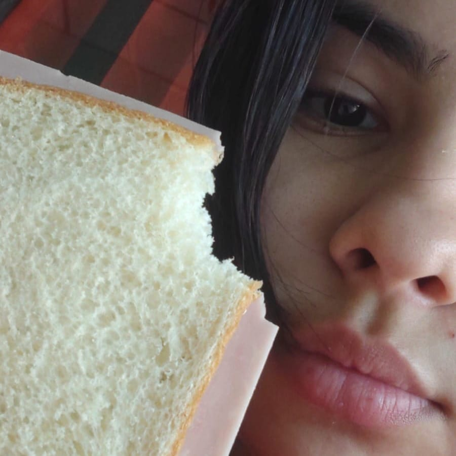

Los labios de María son simplemente una obra bien diseñada. Son gruesos y carnosos,
con un tono rosado muy delicado que les da un aspecto natural y saludable.
Sus labios son un verdadero tesoro y una parte muy atractiva de su belleza natural.
Desde simple vista se nota que tiene unos labios muy suaves y calidos que cualquiera quisisera
tener el gusto de poder probarlos. Afortunado aquel que ya los probó, arrepentido aquel debería
de estar que ya los perdió y suertudo el que los debe de estar disfrutando, Pero lo que los hace aún más interesantes es que están ligeramente quebrados, lo que les da un toque de personalidad y hace que sean aún más distintivos.

Su boquita
Si hablamos de sus labios, no podemos dejar atras la forma de su boca
hermosa, su boca también es como si fuera un tesoro entre todos sus rasgos
físicos. La boca de María es verdaderamente hermosa es de un tamaño medio, con una forma
como la de la letra M y eso es la que hace aún más encantadora,su boca tiene una forma armoniosa
que la hace encajar perfectamente con el resto de sus rasgos faciales.
Cuando habla, su boca se mueve con una gracia natural, lo que la hace aún más fascinante,
Cuando sonríe, sus labios se curvan de una manera que la hacen lucir muy radiante, esos labios tan maravillosos que tiene ella son los que le terminan de dar la perfección a su boca